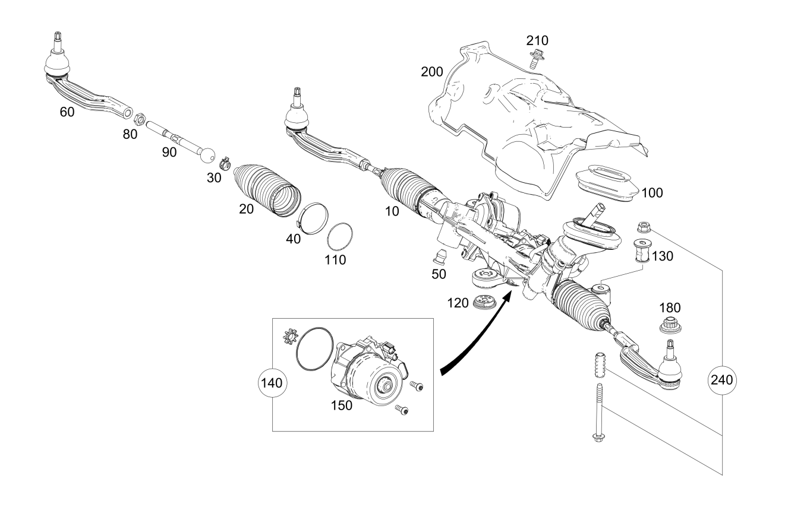

| № | Артикул | Название | Кол. | Примечание | Ограничение |
|---|---|---|---|---|---|
| 10 | A 247 460 78 01 | Рулевой механизм (STEERING GEAR) | 1 | Целиком Рулевое управление: Влево [672] ДЕТАЛЬ ПОСЛЕ УСТАН.ПРОВЕРИТЬ НА АКТУАЛЬНОСТЬ "ПРОШИВНОГО" ПО [697] ДЕТАЛЬ ПОСТАВЛЯЕТСЯ ТОЛЬКО/ИЛИ ТАКЖЕ КАК ЗАП.ЧАСТЬ | |
| 10 | A 247 460 49 01 | Рулевой механизм (STEERING GEAR) | 1 | Целиком Рулевое управление: Влево [672] ДЕТАЛЬ ПОСЛЕ УСТАН.ПРОВЕРИТЬ НА АКТУАЛЬНОСТЬ "ПРОШИВНОГО" ПО [697] ДЕТАЛЬ ПОСТАВЛЯЕТСЯ ТОЛЬКО/ИЛИ ТАКЖЕ КАК ЗАП.ЧАСТЬ | 801 |
| 10 | A 247 460 49 01 | Рулевой механизм (STEERING GEAR) | 1 | Целиком Рулевое управление: Влево [672] ДЕТАЛЬ ПОСЛЕ УСТАН.ПРОВЕРИТЬ НА АКТУАЛЬНОСТЬ "ПРОШИВНОГО" ПО [697] ДЕТАЛЬ ПОСТАВЛЯЕТСЯ ТОЛЬКО/ИЛИ ТАКЖЕ КАК ЗАП.ЧАСТЬ | |
| 10 | A 247 460 82 01 | Рулевой механизм (STEERING GEAR) | 1 | Целиком Рулевое управление: Влево [672] ДЕТАЛЬ ПОСЛЕ УСТАН.ПРОВЕРИТЬ НА АКТУАЛЬНОСТЬ "ПРОШИВНОГО" ПО [697] ДЕТАЛЬ ПОСТАВЛЯЕТСЯ ТОЛЬКО/ИЛИ ТАКЖЕ КАК ЗАП.ЧАСТЬ | |
| 10 | A 247 460 49 01 | Рулевой механизм (STEERING GEAR) | 1 | Целиком Рулевое управление: Влево [672] ДЕТАЛЬ ПОСЛЕ УСТАН.ПРОВЕРИТЬ НА АКТУАЛЬНОСТЬ "ПРОШИВНОГО" ПО [697] ДЕТАЛЬ ПОСТАВЛЯЕТСЯ ТОЛЬКО/ИЛИ ТАКЖЕ КАК ЗАП.ЧАСТЬ | |
| 10 | A 247 460 00 02 | Рулевой механизм (STEERING GEAR) | 1 | Целиком Рулевое управление: Влево [672] ДЕТАЛЬ ПОСЛЕ УСТАН.ПРОВЕРИТЬ НА АКТУАЛЬНОСТЬ "ПРОШИВНОГО" ПО [697] ДЕТАЛЬ ПОСТАВЛЯЕТСЯ ТОЛЬКО/ИЛИ ТАКЖЕ КАК ЗАП.ЧАСТЬ | |
| 10 | A 247 460 48 01 | Рулевой механизм (STEERING GEAR) | 1 | Целиком Рулевое управление: Влево [672] ДЕТАЛЬ ПОСЛЕ УСТАН.ПРОВЕРИТЬ НА АКТУАЛЬНОСТЬ "ПРОШИВНОГО" ПО [697] ДЕТАЛЬ ПОСТАВЛЯЕТСЯ ТОЛЬКО/ИЛИ ТАКЖЕ КАК ЗАП.ЧАСТЬ | 1U5+801 |
| 10 | A 247 460 48 01 | Рулевой механизм (STEERING GEAR) | 1 | Целиком Рулевое управление: Влево [672] ДЕТАЛЬ ПОСЛЕ УСТАН.ПРОВЕРИТЬ НА АКТУАЛЬНОСТЬ "ПРОШИВНОГО" ПО [697] ДЕТАЛЬ ПОСТАВЛЯЕТСЯ ТОЛЬКО/ИЛИ ТАКЖЕ КАК ЗАП.ЧАСТЬ | 1U5 |
| 10 | A 247 460 97 01 | Рулевой механизм (STEERING GEAR) | 1 | Целиком Рулевое управление: Влево [672] ДЕТАЛЬ ПОСЛЕ УСТАН.ПРОВЕРИТЬ НА АКТУАЛЬНОСТЬ "ПРОШИВНОГО" ПО [697] ДЕТАЛЬ ПОСТАВЛЯЕТСЯ ТОЛЬКО/ИЛИ ТАКЖЕ КАК ЗАП.ЧАСТЬ | 1U5 |
| 10 | A 247 460 77 01 | Рулевой механизм (STEERING GEAR) | 1 | Целиком Рулевое управление: Влево [672] ДЕТАЛЬ ПОСЛЕ УСТАН.ПРОВЕРИТЬ НА АКТУАЛЬНОСТЬ "ПРОШИВНОГО" ПО [697] ДЕТАЛЬ ПОСТАВЛЯЕТСЯ ТОЛЬКО/ИЛИ ТАКЖЕ КАК ЗАП.ЧАСТЬ | 1U5 |
| 10 | A 247 460 80 01 | Рулевой механизм (STEERING GEAR) | 1 | Целиком Рулевое управление: Вправо [672] ДЕТАЛЬ ПОСЛЕ УСТАН.ПРОВЕРИТЬ НА АКТУАЛЬНОСТЬ "ПРОШИВНОГО" ПО [697] ДЕТАЛЬ ПОСТАВЛЯЕТСЯ ТОЛЬКО/ИЛИ ТАКЖЕ КАК ЗАП.ЧАСТЬ | |
| 10 | A 247 460 56 01 | Рулевой механизм (STEERING GEAR) | 1 | Целиком Рулевое управление: Вправо [672] ДЕТАЛЬ ПОСЛЕ УСТАН.ПРОВЕРИТЬ НА АКТУАЛЬНОСТЬ "ПРОШИВНОГО" ПО [697] ДЕТАЛЬ ПОСТАВЛЯЕТСЯ ТОЛЬКО/ИЛИ ТАКЖЕ КАК ЗАП.ЧАСТЬ | 801 |
| 10 | A 247 460 56 01 | Рулевой механизм (STEERING GEAR) | 1 | Целиком Рулевое управление: Вправо [672] ДЕТАЛЬ ПОСЛЕ УСТАН.ПРОВЕРИТЬ НА АКТУАЛЬНОСТЬ "ПРОШИВНОГО" ПО [697] ДЕТАЛЬ ПОСТАВЛЯЕТСЯ ТОЛЬКО/ИЛИ ТАКЖЕ КАК ЗАП.ЧАСТЬ | |
| 10 | A 247 460 99 01 | Рулевой механизм (STEERING GEAR) | 1 | Целиком Рулевое управление: Вправо [672] ДЕТАЛЬ ПОСЛЕ УСТАН.ПРОВЕРИТЬ НА АКТУАЛЬНОСТЬ "ПРОШИВНОГО" ПО [697] ДЕТАЛЬ ПОСТАВЛЯЕТСЯ ТОЛЬКО/ИЛИ ТАКЖЕ КАК ЗАП.ЧАСТЬ | |
| 10 | A 247 460 46 02 | Рулевой механизм (STEERING GEAR) | 1 | Целиком Рулевое управление: Вправо [672] ДЕТАЛЬ ПОСЛЕ УСТАН.ПРОВЕРИТЬ НА АКТУАЛЬНОСТЬ "ПРОШИВНОГО" ПО [697] ДЕТАЛЬ ПОСТАВЛЯЕТСЯ ТОЛЬКО/ИЛИ ТАКЖЕ КАК ЗАП.ЧАСТЬ | |
| 10 | A 247 460 79 01 | Рулевой механизм (STEERING GEAR) | 1 | Целиком Рулевое управление: Влево [672] ДЕТАЛЬ ПОСЛЕ УСТАН.ПРОВЕРИТЬ НА АКТУАЛЬНОСТЬ "ПРОШИВНОГО" ПО [697] ДЕТАЛЬ ПОСТАВЛЯЕТСЯ ТОЛЬКО/ИЛИ ТАКЖЕ КАК ЗАП.ЧАСТЬ | 1U5+213 |
| 10 | A 247 460 50 01 | Рулевой механизм (STEERING GEAR) | 1 | Целиком Рулевое управление: Влево [672] ДЕТАЛЬ ПОСЛЕ УСТАН.ПРОВЕРИТЬ НА АКТУАЛЬНОСТЬ "ПРОШИВНОГО" ПО [697] ДЕТАЛЬ ПОСТАВЛЯЕТСЯ ТОЛЬКО/ИЛИ ТАКЖЕ КАК ЗАП.ЧАСТЬ | 1U5+213+801 |
| 10 | A 247 460 50 01 | Рулевой механизм (STEERING GEAR) | 1 | Целиком Рулевое управление: Влево [672] ДЕТАЛЬ ПОСЛЕ УСТАН.ПРОВЕРИТЬ НА АКТУАЛЬНОСТЬ "ПРОШИВНОГО" ПО [697] ДЕТАЛЬ ПОСТАВЛЯЕТСЯ ТОЛЬКО/ИЛИ ТАКЖЕ КАК ЗАП.ЧАСТЬ | 1U5+213 |
| 10 | A 247 460 89 01 | Рулевой механизм (STEERING GEAR) | 1 | Целиком Рулевое управление: Влево [672] ДЕТАЛЬ ПОСЛЕ УСТАН.ПРОВЕРИТЬ НА АКТУАЛЬНОСТЬ "ПРОШИВНОГО" ПО [697] ДЕТАЛЬ ПОСТАВЛЯЕТСЯ ТОЛЬКО/ИЛИ ТАКЖЕ КАК ЗАП.ЧАСТЬ | 213 |
| 10 | A 247 460 81 01 | Рулевой механизм (STEERING GEAR) | 1 | Целиком Рулевое управление: Вправо [672] ДЕТАЛЬ ПОСЛЕ УСТАН.ПРОВЕРИТЬ НА АКТУАЛЬНОСТЬ "ПРОШИВНОГО" ПО [697] ДЕТАЛЬ ПОСТАВЛЯЕТСЯ ТОЛЬКО/ИЛИ ТАКЖЕ КАК ЗАП.ЧАСТЬ | 213 |
| 10 | A 247 460 57 01 | Рулевой механизм (STEERING GEAR) | 1 | Целиком Рулевое управление: Вправо [672] ДЕТАЛЬ ПОСЛЕ УСТАН.ПРОВЕРИТЬ НА АКТУАЛЬНОСТЬ "ПРОШИВНОГО" ПО [697] ДЕТАЛЬ ПОСТАВЛЯЕТСЯ ТОЛЬКО/ИЛИ ТАКЖЕ КАК ЗАП.ЧАСТЬ | 213+801 |
| 10 | A 247 460 57 01 | Рулевой механизм (STEERING GEAR) | 1 | Целиком Рулевое управление: Вправо [672] ДЕТАЛЬ ПОСЛЕ УСТАН.ПРОВЕРИТЬ НА АКТУАЛЬНОСТЬ "ПРОШИВНОГО" ПО [697] ДЕТАЛЬ ПОСТАВЛЯЕТСЯ ТОЛЬКО/ИЛИ ТАКЖЕ КАК ЗАП.ЧАСТЬ | 213 |
| 10 | A 247 460 01 02 | Рулевой механизм (STEERING GEAR) | 1 | Целиком Рулевое управление: Вправо [672] ДЕТАЛЬ ПОСЛЕ УСТАН.ПРОВЕРИТЬ НА АКТУАЛЬНОСТЬ "ПРОШИВНОГО" ПО [697] ДЕТАЛЬ ПОСТАВЛЯЕТСЯ ТОЛЬКО/ИЛИ ТАКЖЕ КАК ЗАП.ЧАСТЬ | 213 |
| 10 | A 247 460 48 02 | Рулевой механизм (STEERING GEAR) | 1 | Целиком Рулевое управление: Вправо [672] ДЕТАЛЬ ПОСЛЕ УСТАН.ПРОВЕРИТЬ НА АКТУАЛЬНОСТЬ "ПРОШИВНОГО" ПО [697] ДЕТАЛЬ ПОСТАВЛЯЕТСЯ ТОЛЬКО/ИЛИ ТАКЖЕ КАК ЗАП.ЧАСТЬ | 213 |
| 10 | A 247 460 01 02 | Рулевой механизм (STEERING GEAR) | 1 | Целиком Рулевое управление: Вправо [672] ДЕТАЛЬ ПОСЛЕ УСТАН.ПРОВЕРИТЬ НА АКТУАЛЬНОСТЬ "ПРОШИВНОГО" ПО [697] ДЕТАЛЬ ПОСТАВЛЯЕТСЯ ТОЛЬКО/ИЛИ ТАКЖЕ КАК ЗАП.ЧАСТЬ | 213 |
| 10 | A 247 460 48 02 | Рулевой механизм (STEERING GEAR) | 1 | Целиком Рулевое управление: Вправо [672] ДЕТАЛЬ ПОСЛЕ УСТАН.ПРОВЕРИТЬ НА АКТУАЛЬНОСТЬ "ПРОШИВНОГО" ПО [697] ДЕТАЛЬ ПОСТАВЛЯЕТСЯ ТОЛЬКО/ИЛИ ТАКЖЕ КАК ЗАП.ЧАСТЬ | 213 |
| 10 | A 247 460 97 01 | Рулевой механизм (STEERING GEAR) | 1 | Целиком Рулевое управление: Влево [672] ДЕТАЛЬ ПОСЛЕ УСТАН.ПРОВЕРИТЬ НА АКТУАЛЬНОСТЬ "ПРОШИВНОГО" ПО [697] ДЕТАЛЬ ПОСТАВЛЯЕТСЯ ТОЛЬКО/ИЛИ ТАКЖЕ КАК ЗАП.ЧАСТЬ | 1U5 |
| 10 | A 247 460 44 02 | Рулевой механизм (STEERING GEAR) | 1 | Целиком Рулевое управление: Влево [672] ДЕТАЛЬ ПОСЛЕ УСТАН.ПРОВЕРИТЬ НА АКТУАЛЬНОСТЬ "ПРОШИВНОГО" ПО [697] ДЕТАЛЬ ПОСТАВЛЯЕТСЯ ТОЛЬКО/ИЛИ ТАКЖЕ КАК ЗАП.ЧАСТЬ | 1U5 |
| 10 | A 247 460 98 01 | Рулевой механизм (STEERING GEAR) | 1 | Целиком Рулевое управление: Влево [672] ДЕТАЛЬ ПОСЛЕ УСТАН.ПРОВЕРИТЬ НА АКТУАЛЬНОСТЬ "ПРОШИВНОГО" ПО [697] ДЕТАЛЬ ПОСТАВЛЯЕТСЯ ТОЛЬКО/ИЛИ ТАКЖЕ КАК ЗАП.ЧАСТЬ | 213 |
| 10 | A 247 460 45 02 | Рулевой механизм (STEERING GEAR) | 1 | Целиком Рулевое управление: Влево [672] ДЕТАЛЬ ПОСЛЕ УСТАН.ПРОВЕРИТЬ НА АКТУАЛЬНОСТЬ "ПРОШИВНОГО" ПО [697] ДЕТАЛЬ ПОСТАВЛЯЕТСЯ ТОЛЬКО/ИЛИ ТАКЖЕ КАК ЗАП.ЧАСТЬ | 213 |
| 10 | A 247 460 99 01 | Рулевой механизм (STEERING GEAR) | 1 | Целиком Рулевое управление: Вправо [672] ДЕТАЛЬ ПОСЛЕ УСТАН.ПРОВЕРИТЬ НА АКТУАЛЬНОСТЬ "ПРОШИВНОГО" ПО [697] ДЕТАЛЬ ПОСТАВЛЯЕТСЯ ТОЛЬКО/ИЛИ ТАКЖЕ КАК ЗАП.ЧАСТЬ | |
| 10 | A 247 460 46 02 | Рулевой механизм (STEERING GEAR) | 1 | Целиком Рулевое управление: Вправо [672] ДЕТАЛЬ ПОСЛЕ УСТАН.ПРОВЕРИТЬ НА АКТУАЛЬНОСТЬ "ПРОШИВНОГО" ПО [697] ДЕТАЛЬ ПОСТАВЛЯЕТСЯ ТОЛЬКО/ИЛИ ТАКЖЕ КАК ЗАП.ЧАСТЬ | |
| 10 | A 247 460 00 02 | Рулевой механизм (STEERING GEAR) | 1 | Целиком Рулевое управление: Влево [672] ДЕТАЛЬ ПОСЛЕ УСТАН.ПРОВЕРИТЬ НА АКТУАЛЬНОСТЬ "ПРОШИВНОГО" ПО [697] ДЕТАЛЬ ПОСТАВЛЯЕТСЯ ТОЛЬКО/ИЛИ ТАКЖЕ КАК ЗАП.ЧАСТЬ | |
| 10 | A 247 460 47 02 | Рулевой механизм (STEERING GEAR) | 1 | Целиком Рулевое управление: Влево [672] ДЕТАЛЬ ПОСЛЕ УСТАН.ПРОВЕРИТЬ НА АКТУАЛЬНОСТЬ "ПРОШИВНОГО" ПО [697] ДЕТАЛЬ ПОСТАВЛЯЕТСЯ ТОЛЬКО/ИЛИ ТАКЖЕ КАК ЗАП.ЧАСТЬ | |
| 20 | A 177 463 00 00 | - Гофрированный чехол (BELLOWS) | 2 | Слева и справа | |
| 30 | A 000 995 78 00 | - Пружинный хомут (SPRING HOSE CLAMP) | 2 | Наружн. (лев. и прав.) | |
| 40 | A 000 995 77 00 | - Ушковый хомут (ONE-EAR CLAMP) | 2 | Изнутри слева и справа | |
| 50 | A 003 998 01 50 | - Пробка (STOP PLUG) | 2 | Рулевой механизм | |
| 50 | A 000 998 97 03 | - Пробка (STOP PLUG) | 3 | Рулевой механизм Рулевое управление: Влево | 1U5 |
| 60 | A 247 330 85 01 | - Поперечная рулевая тяга (TIE ROD) | 1 | Снаружи слева | |
| 60 | A 247 330 82 01 | - Поперечная рулевая тяга (TIE ROD) | 1 | Снаружи справа | |
| 80 | N 308673 014001 | - Шестигранная гайка (HEXAGON NUT) | 2 | Поперечная рулевая тяга к рычагу поворотного кулака; M14X1.5 | |
| 90 | A 177 338 00 00 | - Поперечная рулевая тяга (TIE ROD) | 2 | ВНУТРИ, СЛЕВА И СПРАВА | |
| 100 | A 177 462 00 00 | - Уплотнительная манжета (SEALING BOOT) | 1 | К рулевому механизму | |
| 110 | A 000 997 67 08 | - Кольцевая прокладка (O-RING) | 2 | Слева и справа | |
| 120 | A 177 466 02 00 | - Эластомерная опора (ELASTOMER BEARING) | 2 | Сверху и снизу Рулевое управление: Влево | 1U5 |
| 130 | A 177 466 01 00 | - Эластомерная опора (ELASTOMER BEARING) | 2 | Сзади слева и справа Рулевое управление: Влево | 1U5 |
| 140 | A 177 900 65 05 | - Компл.дет. блока управл. (PARTS KIT, CONTROL UNIT) | 1 | Рулевой механизм Рулевое управление: Влево | |
| 140 | A 177 900 02 07 | - Компл.дет. блока управл. | 1 | Рулевой механизм Рулевое управление: Вправо | 801 |
| 140 | A 177 900 02 07 | - Компл.дет. блока управл. | 1 | Рулевой механизм Рулевое управление: Вправо | |
| 140 | A 177 900 64 08 | - Компл.дет. блока управл. (PARTS KIT, CONTROL UNIT) | 1 | Рулевой механизм Рулевое управление: Вправо | |
| 140 | A 177 460 56 01 | - Ремкомплект рул.механизма (REPAIR KIT, STEERING GEAR) | 1 | Рулевой механизм Рулевое управление: Вправо | |
| 140 | A 177 460 72 01 | - Ремкомплект рул.механизма (REPAIR KIT, STEERING GEAR) | 1 | Рулевой механизм Рулевое управление: Вправо [697] ДЕТАЛЬ ПОСТАВЛЯЕТСЯ ТОЛЬКО/ИЛИ ТАКЖЕ КАК ЗАП.ЧАСТЬ | |
| 140 | A 177 900 01 07 | - Компл.дет. блока управл. (PARTS KIT, CONTROL UNIT) | 1 | Рулевой механизм Рулевое управление: Влево | 801 |
| 140 | A 177 900 01 07 | - Компл.дет. блока управл. (PARTS KIT, CONTROL UNIT) | 1 | Рулевой механизм Рулевое управление: Влево | |
| 140 | A 177 900 63 08 | - Компл.дет. блока управл. (PARTS KIT, CONTROL UNIT) | 1 | Рулевой механизм Рулевое управление: Влево | |
| 140 | A 177 460 55 01 | - Ремкомплект рул.механизма (REPAIR KIT, STEERING GEAR) | 1 | Рулевой механизм Рулевое управление: Влево | |
| 140 | A 177 460 71 01 | - Ремкомплект рул.механизма (REPAIR KIT, STEERING GEAR) | 1 | Рулевой механизм Рулевое управление: Влево [697] ДЕТАЛЬ ПОСТАВЛЯЕТСЯ ТОЛЬКО/ИЛИ ТАКЖЕ КАК ЗАП.ЧАСТЬ | |
| 150 | A 247 900 87 08 | - Блок управления (CONTROL UNIT) | 1 | К рулевому механизму [672] ДЕТАЛЬ ПОСЛЕ УСТАН.ПРОВЕРИТЬ НА АКТУАЛЬНОСТЬ "ПРОШИВНОГО" ПО | |
| 180 | A 005 990 47 50 | Гайка комбинированная (NUT-AND-WASHER ASSEMBLY) | 1 | Поперечная рулевая тяга к поворотному кулаку слева; M14X1,5 | |
| 180 | A 005 990 47 50 | Гайка комбинированная (NUT-AND-WASHER ASSEMBLY) | 1 | Поперечная рулевая тяга к поворотному кулаку справа; M14X1,5 | |
| 200 | A 177 466 00 00 | Термозащитный экран (HEAT SHIELD) | 1 | Над рулевым механизмом Рулевое управление: Влево | |
| 200 | A 177 466 05 00 | Термозащитный экран (HEAT SHIELD) | 1 | Над рулевым механизмом Рулевое управление: Влево | |
| 200 | A 247 466 02 38 | Термозащитный экран (HEAT SHIELD) | 1 | Над рулевым механизмом Рулевое управление: Вправо | |
| 210 | A 002 990 42 03 | Винт Torx External (HEXALOBULAR HEAD SCREW) | 4 | Крепление экрана Рулевое управление: Влево | |
| 210 | A 002 990 42 03 | Винт Torx External (HEXALOBULAR HEAD SCREW) | 4 | Крепление экрана Рулевое управление: Влево | |
| 210 | A 002 990 42 03 | Винт Torx External (HEXALOBULAR HEAD SCREW) | 4 | Крепление экрана Рулевое управление: Вправо | |
| 210 | A 002 990 42 03 | Винт Torx External (HEXALOBULAR HEAD SCREW) | 4 | Крепление экрана Рулевое управление: Вправо | |
| 240 | A 177 460 09 01 | Комплект рул. механизма (PARTS KIT, STEERING GEAR) | 1 | Крепление рулевого механизма [440] ОБРАЩАТЬ ВНИМАНИЕ НА ДОПОЛНИТЕЛЬНУЮ ИНФОРМАЦИЮ В WIS | 1U5 |
| 240 | A 177 460 16 01 | Комплект рул. механизма (PARTS KIT, STEERING GEAR) | 1 | Крепление рулевого механизма [440] ОБРАЩАТЬ ВНИМАНИЕ НА ДОПОЛНИТЕЛЬНУЮ ИНФОРМАЦИЮ В WIS | (-1U5) |
Позиций: 70 · подписано на схемах: 70 · колесо — плавный зум в курсор, перетаскивание — пан, двойной клик — зум, клик по артикулу — скопировать.